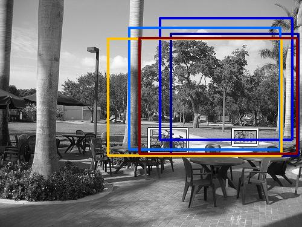
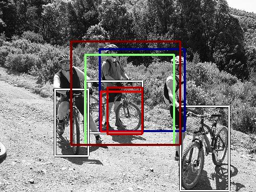
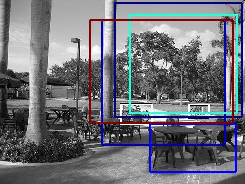
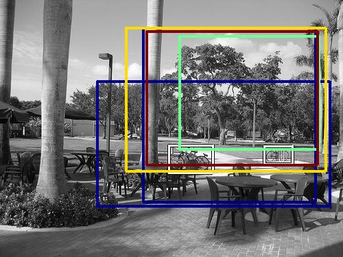
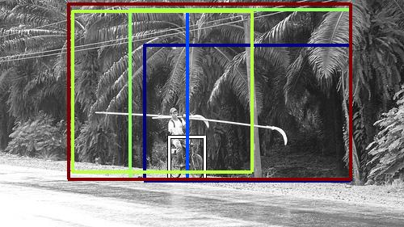
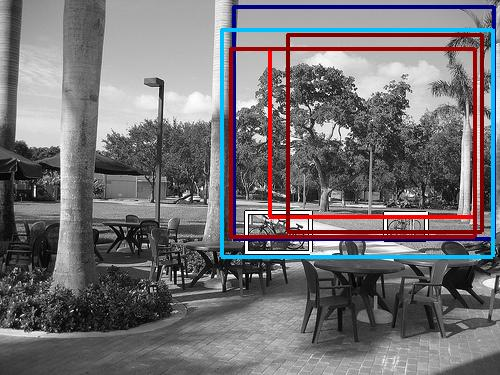

0.633117

0.650964

0.691809

0.696501

0.726239

0.757979

0.774918

0.797894

0.804063

0.814985
| Target image | 0.633117 | 0.650964 | 0.691809 | 0.696501 | 0.726239 | 0.757979 | 0.774918 | 0.797894 | 0.804063 | 0.814985 |
Target image |  1664.655151 |  1552.671997 |  1260.127197 |  1136.439575 |  1123.352661 |  1090.110474 |  1075.199585 |  1004.739441 |  962.351746 |  961.771118 |
Target image |  1951.598389 |  1644.091064 |  1303.960205 |  1036.761230 |  1013.130981 |  908.004883 |  880.615356 |  857.090759 |  831.470825 |  831.166687 |
Target image |  1303.008057 |  1208.801758 |  1067.366577 |  1058.047119 |  1037.807251 |  1021.328552 |  1020.359558 |  969.681274 |  967.524048 |  914.042236 |
Target image |  1868.026367 |  1433.343506 |  1375.654907 |  1306.737671 |  1287.795898 |  1274.420288 |  1128.725830 |  1123.799561 |  1083.135254 |  1010.695618 |